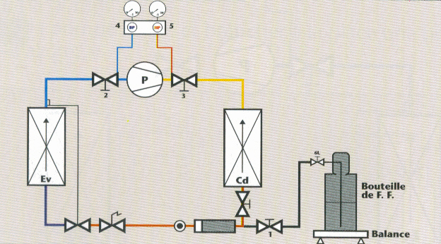

Thème / DomaineSimulation de charge au poids (azote)
Module S8-F1 · 4 h × 2 — DOCUMENT PROFESSEURSimulation de charge au poids
SéquenceS8 · semaines 26-27
Salle / ZoneAtelier Froid — poste de charge simulée (balance + bouteille d'azote + monodétendeur) + machine école + vestiaire
Durée prévue4 h par passage, deux demi-journées (semaines 26 et 27)
ModalitéCheck-list « avant-vol » chronométrée, répétée jusqu'à la fluidité — méthode imposée du module
Encadrement1 professeur, demi-groupe — présence permanente pendant toute manipulation de la bouteille d'azote et du monodétendeur ; aucune attestation d'aptitude requise (azote seul)
Tâches
T13 Tirer au vide, charger et contrôler l'installation sous tension simulé — seul le geste à blanc T14 Régler l'installation en fonctionnement découverte
Rigueur du geste · sécurité azote et balance · honnêteté du chronométrage et des masses · autonomie croissante (passage 2)
Compétences (≤ 4)
Découverte — simuléeC4.2 Manipuler le fluide frigorigène et les huiles — geste simulé à l'azote sur T13 · S5.2 ConfortementC4.7 Raccorder les équipements de charge, de mesure et de contrôle sur T13 · S5.2
⚠ Distinguo 1re / 2e année — pourquoi on simule —
La manipulation d'un fluide frigorigène réel est soumise en France à une attestation d'aptitude
à la manipulation des fluides frigorigènes, délivrée après un examen théorique et
pratique. Les élèves de 1re année CAP IFCA ne détiennent pas encore cette attestation : elle se
prépare en 2e année. Ce module ne fait donc aucune charge réelle et aucune
récupération : le geste (tare, raccordement, ouverture, pesée, complément) est répété à l'azote, gaz
neutre, sur du matériel pédagogique. Source de cadrage : repere_fluides_frigorigenes_et_attestation_
daptitude_.docx (Éducation nationale, catégories I-V — document réservé au professeur, non distribué aux
élèves). Ne jamais introduire de bouteille de fluide frigorigène sur ce poste, même vide.
Ce que ce document ajoute au TP élève
Ce document est le pendant exact du document élève du module S8-F1 :
mêmes 2 passages, mêmes 2 jalons par passage, même check-list en 6 étapes, mêmes 5 répétitions. Il y ajoute :
la préparation des postes (balance, bouteille d'azote, machine école), la masse cible à fixer
avant la séance, les corrigés des questions, les erreurs typiques et leur remédiation, le minutage 4 h
recompté, la différenciation, et le lien avec S8-F2 et S8-T1. Aucune masse de fluide réel n'est affirmée :
la masse cible de la charge simulée reste un champ à compléter par le professeur, jamais une valeur imposée par
ce document.
Méthode pédagogique du module — la check-list « avant-vol »
Le geste de charge est découpé en 6 étapes fixes (tare, raccordement,
ouverture, pesée du transfert simulé, complément, contrôle SC/SR), présentées comme la check-list d'un pilote
avant décollage. Chaque étape est cochée et minutée ; le binôme répète le geste complet 5 fois sur
les deux passages (2 au passage 1, 3 au passage 2), en cherchant la fluidité — un temps stable ou en
baisse, sans case oubliée — jamais la vitesse au détriment de la sécurité.
Point de vigilance central du module — Ne jamais laisser un binôme
« accélérer » en sautant la vérification de pression ou la purge : si un temps baisse au prix d'une case non
cochée, la répétition est invalidée et refaite. La fluidité se gagne par la maîtrise du geste, pas par
la prise de risque.
Préparation des postes (avant la séance)
Poste
Préparation
Balance électronique de charge
Vérifier la batterie (alcaline 9 V, type PRATIKA 100-05 ou équivalent), poser sur une surface plane et sèche, tester la fonction TARE/ZERO avant la séance.
Bouteille d'azote + monodétendeur
Bouteille pleine, debout, arrimée ; monodétendeur monté et vérifié (réglage de référence 8 bar / 200 bar, cf. schéma S5/S6) ; robinet fermé avant l'arrivée des élèves.
Réceptacle pédagogique
Bouteille ou cylindre vide dédié à la charge simulée, purgé et étiqueté « azote uniquement » — jamais une bouteille ayant contenu du fluide frigorigène.
Machine école
En fonctionnement normal sur sa charge d'usine réelle et scellée, contrôlée avant la séance (SC/SR dans la plage attendue) ; accès manomètres et réglette dégagé pour la lecture. Jamais ouverte par les élèves.
Masse cible de la charge simulée
Champ à compléter par le professeur avant chaque séance, ex. entre 100 et 300 g selon le volume du réceptacle disponible : ________ g. Cette valeur n'est jamais celle d'une charge réelle de fluide frigorigène.
Trame horaire — module 4 h (recomptée ligne à ligne, alignée sur le plan de séance)
Durée
Étape
Contenu
Demi-journée — 4 h 00 (préparation de chantier = 1 h 00) — identique aux deux passages
10 min
1. Débuter la séance
Accueil, appel, rappel de l'organisation (démonstration puis répétitions chronométrées).
10 min
2. Mettre en situation
Ordre d'intervention OI-S8-1 : la chambre froide est prête à être chargée, l'attestation d'aptitude arrivant en 2e année, on répète le geste à blanc, à l'azote.
5 min
3. Présenter les objectifs
Les 7 « je serai capable de… » affichés et commentés, lien avec la formule (C4.2 Découverte simulée, C4.7 Confortement).
15 min
4. Vérifier les prérequis
Passage en tenue échelonné ; quiz éclair sur le monodétendeur et la bouteille d'azote (S5/S6), la réglette P/T (S4) et la lecture du manifold (S7-F1).
20 min
5. Donner la démarche
Mise en sécurité (pression jamais dépassée, bouteille arrimée, asphyxie sans odeur) puis « planter la notion » : question « pourquoi un pilote suit-il sa check-list même après des milliers d'heures de vol ? » → NOMMER « check-list avant-vol » → EXPLICITER pourquoi répéter dans l'ordre élimine les oublis dangereux. Rappel bref du distinguo 1re/2e année. Distribution des check-lists par poste.
Passage 1 (50 min) : répétition 2, tableau des masses, lecture SC/SR sur la machine école. Passage 2 (80 min) : répétitions 4 et 5, tableau des temps complet, verdict de fluidité, contrôle SC/SR final.
15 min
7-8. Synthèse + évaluer et réajuster
Mise en commun des tableaux des temps et des masses, auto-positionnement (C4.2, C4.7 + savoir-être) puis validation professeur.
10 min
8 bis. Bon de commande
Rituel chantier : carnet de bord (F3) + bon de commande.
10 min
9. Ranger — nettoyer
Vérification des postes (robinet fermé, monodétendeur détendu, réceptacle purgé), nettoyage des établis.
5 min
10. Clôturer la séance
Retour en tenue de ville, restitution des EPI, annonce du module suivant (S8-F2, vide + charge simulée enchaînés).
Total : préparation de chantier (phases 1→5) = 10+10+5+15+20 =
1 h 00 (plafond) ; jalon 1/1' + pause 15 min + jalon 2/2' = 2 h 20 (passage 1 : 75+15+50 ; passage 2 :
45+15+80) ; synthèse 15 + bon de commande 10 + rangement 10 + clôture 5 = 40 min. Total module : 1 h 00 + 2 h 20
+ 40 min = 4 h 00 exactes, aux deux passages, conforme au plan de séance.
Ce que ce module prépare — Ce module reste un module de
Découverte simulée pour C4.2 (première fois que l'élève « charge » quelque chose, même à blanc) et de
Confortement pour C4.7 (le manifold est déjà maîtrisé depuis S7-F1, réinvesti ici sur un poste de charge).
La fluidité du geste acquise ici nourrit directement S8-F2 (semaine 28, passage unique), où l'élève
enchaînera SEUL le vide (S7-F2) puis la charge simulée (ce module) dans une mini-mise en service intégrale,
et remplira la feuille de relevés de mise en service. Elle prépare aussi le teasing de fin de séquence :
« la vraie charge, avec l'attestation, c'est la 2e année ».
Le montage de principe (balance + bouteille + manifold)
Le schéma ci-dessous, extrait d'une ressource professionnelle sur la charge en
fluide frigorigène, illustre le principe général du montage balance/bouteille/manifold sur un circuit
frigorifique. En 1A, ce module ne suit pas ce schéma à la lettre : la bouteille posée sur la balance est
une bouteille d'azote, reliée par un monodétendeur à un réceptacle pédagogique vide — jamais au
circuit scellé de la machine école. Le principe de la pesée (tare, transfert, complément) reste identique ;
seul le fluide et la destination du transfert changent.

Montage de principe pour une charge en fluide frigorigène (source professionnelle,
circuit réel) : la bouteille repose sur la balance électronique, reliée au manifold. D'après : DOSSIER
RESSOURCES charge.docx (02_CAP-IFCA/C4-MettreEnService). Transposition 1A : la bouteille de fluide est
remplacée par une bouteille d'azote et le circuit par un réceptacle pédagogique vide — ce schéma sert
uniquement à situer le rôle de la balance, jamais de support pour une charge réelle en 1A.
Corrigé — question jalon 1 : pourquoi tarer avant de raccorder ?
Réponse attendue — Si la balance affiche déjà un poids (celui du
réceptacle vide, ou pire celui du réceptacle + une partie du flexible) avant le raccordement, la lecture du
transfert sera faussée : on croira avoir transféré plus ou moins d'azote que la réalité. Tarer AVANT permet à
la balance de n'afficher que la masse réellement transférée pendant l'étape 4.
Organisation des postes
Zone
Fonction / matériel
Points de vigilance
Poste de charge simulée
Bouteille d'azote + monodétendeur, balance électronique, manifold, réceptacle pédagogique — un poste par binôme aux deux passages.
Vérifier avant la séance que chaque bouteille d'azote est suffisamment pleine pour 5 répétitions sans coupure de séance.
Machine école
Un ou plusieurs postes de lecture SC/SR, partagés en rotation si le nombre de machines est limité.
Contrôler avant la séance que chaque machine fonctionne normalement (SC/SR dans la plage attendue) : aucun défaut à diagnostiquer aujourd'hui.
Poste témoin (phase 5)
Préparé à l'avance pour la démonstration professeur du jalon 1.
Prévoir un chronomètre visible de tous pour ancrer d'emblée la logique du minutage.
Combien de postes simultanés ?
Autant que de binômes si le nombre de balances et de bouteilles d'azote le permet ; sinon, rotation organisée avec un carnet de bord d'attente (quiz éclair).
Point ouvert (cf. _ETAT.md) : nombre réel de balances, de bouteilles d'azote et de monodétendeurs disponibles à l'atelier.
Corrigé — critères observables du jalon 1 / 1'
Critère observable
Ce qui est attendu / ce qui alerte
Ordre des 6 étapes respecté
Tare → raccordement → ouverture → pesée → complément → contrôle SC/SR, sans inversion ; une étape non cochée doit être reprise avant de continuer.
Pression jamais dépassée
Aucune tolérance : le monodétendeur reste réglé à la valeur fixée par le professeur, surveillée en continu pendant l'ouverture.
Masse cible atteinte à la tolérance près
Un écart de quelques grammes est acceptable (complément à l'étape 5) ; un écart important doit être expliqué, pas ignoré.
Temps chronométré honnêtement
Le temps est relevé au moment réel de chaque répétition ; un temps « arrangé » a posteriori est un manquement à l'honnêteté du relevé.
Erreurs typiques — jalon 1 / 1'
Erreur observée
Remédiation immédiate
Tare oubliée ou faite après raccordement
Arrêt immédiat, faire reprendre l'étape 1 dans son intégralité avant de continuer — ne jamais « corriger » une pesée après coup.
Bouteille couchée ou non arrimée
Recadrage ferme et immédiat : remettre la bouteille debout et arrimée avant de poursuivre quoi que ce soit.
Pression dépassée au monodétendeur
Interruption immédiate, fermeture du robinet, rappel que la valeur fixée n'est jamais négociable ; reprendre l'étape 3 depuis le début.
Répétition commencée avant la fin de la démonstration (passage 1)
Interrompre, faire revenir à l'observation : le sens de la méthode est d'observer avant de reproduire.
Aucune valeur n'est imposée par ce document : chaque binôme pèse sa propre masse
transférée, sur son propre poste. Le professeur valide que :
la balance a bien été tarée avant le raccordement (masse avant = 0.000) ;
la masse transférée correspond à la différence entre masse après et masse avant, sans calcul erroné ;
l'écart avec la masse cible fixée reste dans une tolérance raisonnable (quelques grammes selon la
précision de la balance, cf. fiche technique : résolution 5 g pour un modèle type PRATIKA 100-05) ;
un écart important est expliqué par le binôme (fuite au raccordement, purge trop longue, lecture
tardive de la balance) plutôt que passé sous silence.
Écart assumé — pourquoi le contrôle SC/SR est une LECTURE, pas une charge
Point de vigilance central — La surchauffe et le sous-refroidissement ne
se mesurent que sur un circuit frigorifique réellement chargé en fluide, en fonctionnement : l'azote,
gaz inerte introduit dans un réceptacle pédagogique séparé, ne permet aucune mesure de ce type. C'est pourquoi
l'étape 6 se fait sur la machine école, un appareil distinct qui fonctionne en continu sur sa charge
d'usine réelle et scellée — jamais ouverte ni chargée par les élèves. Les élèves y lisent seulement
la surchauffe et le sous-refroidissement, exactement le geste de lecture manomètre + réglette déjà maîtrisé en
S7-F1. Ce choix est délibéré (cadrage S8, principe fondateur azote) : il relie le geste de pesée du jour à son
objectif professionnel sans jamais faire manipuler de fluide réel à un élève de 1re année.
Corrigé — lecture SC/SR et seuils retenus
📄 Ressource fournie — table pression/température. Pour trouver la température de saturation qui correspond à une pression (indispensable pour estimer la surchauffe SC et le sous-refroidissement SR), utilisez la réglette P/T multi-fluides ou la table du fluide de votre banc : R134a · R404A · R410A. N'inventez jamais une valeur : lisez-la sur la table.
Mesure
Seuil retenu (charte FrigorX)
Source
Surchauffe (SC)
5 à 10 K
Charte pédagogique FrigorX §7 ; cohérent avec S7-F1/S7-T1
Sous-refroidissement (SR)
4 à 8 K
Charte pédagogique FrigorX §7 ; cohérent avec S7-F1/S7-T1
La source DOSSIER RESSOURCES charge.docx donne
des plages voisines mais différentes (sous-refroidissement 4-7 °C, surchauffe 5-8 °C) : elle est citée « d'après »
pour le principe de la vérification, mais ce sont les seuils de la charte FrigorX ci-dessus qui font foi
dans ce document et dans la grille d'évaluation.
Corrigé — verdict de fluidité (5 répétitions)
Le professeur valide un verdict FLUIDE si : le temps de la répétition 5 est
inférieur ou égal à celui de la répétition 1 (ou stable si le binôme partait déjà vite), et aucune case
de la check-list n'a été sautée sur l'ensemble des 5 répétitions. Un temps qui baisse au prix d'une case
manquante ne vaut pas un verdict fluide : il indique une prise de risque, pas une maîtrise.
Erreurs typiques — jalon 2 / 2'
Erreur observée
Remédiation immédiate
Confusion entre lecture et charge sur la machine école
Rappeler fermement : on ne touche à aucune vanne ni raccord de la machine école, on lit seulement les manomètres déjà en place.
Tableau des masses recopié entre répétitions
Faire refaire la pesée réelle : chaque répétition a sa propre masse, même proche de la précédente.
Verdict de fluidité gonflé (temps amélioré en sautant une case)
Invalider le verdict, faire recommencer une répétition complète en présence du professeur.
Confusion entre seuils source et seuils charte
Rappeler que seuls les seuils de la charte (SC 5-10 K, SR 4-8 K) comptent pour la conclusion « cohérent / à faire valider ».
Au passage 1, la démonstration est redécoupée en deux temps (raccordement seul, puis pesée seule) avant la répétition 1 ; au passage 2, le professeur reste au poste pour la répétition 3 entière, avec un pointage de sécurité plus rapproché sans reprendre le geste à leur place.
Standard
Déroulement tel que décrit dans le document élève : démonstration puis 2 répétitions au passage 1, 3 répétitions au passage 2.
Approfondissement tutorat
Après la répétition 5 validée, ces élèves expliquent à un pair pourquoi une étape vient à sa place précise dans la check-list (ex. pourquoi la purge se fait avant le serrage définitif) — sans jamais manipuler le poste d'un autre binôme.
FLE
Vocabulaire répété à l'identique (« tarer », « peser », « purger »), check-list très visuelle (une icône par étape), même ordre des 6 étapes répété verbalement à chaque répétition.
TDAH / DYS
Le chronomètre visible et le rituel des 6 cases identiques d'une répétition à l'autre rassurent par leur régularité ; annoncer explicitement en phase 5 que « la check-list ne change jamais » limite l'anxiété face à la nouveauté du matériel (balance).
Croisements interdisciplinaires
S8-T1 « Fluides frigorigènes — familles et étiquettes » — même semaine 26, réactive le vocabulaire
des fluides et le distinguo azote/fluide réel ;
Co-intervention français — rédaction du carnet de bord (module F3) ;
Modules S4 / S5 / S6 / S7-F1 — la réglette P/T (S4), le monodétendeur et la bouteille d'azote
(S5, S6), le manifold (S7-F1) ;
S8-F2 (vide + charge simulée enchaînés, sem. 28, passage unique) — même matériel, cette fois
intégré à une mini-mise en service complète, avec la feuille de relevés ;
S8-E1 (réglage de consignes, autre demi-groupe, mêmes semaines) — même fil rouge arrière-boutique.
Échelle FrigorX : 0 Non évalué · 1 Non acquis · 2 En cours
d'acquisition · 3 Acquis · 4 Parfaitement maîtrisé. Statut du jour : C4.2 Découverte — simulée (première
charge, même à blanc) ; C4.7 Confortement (manifold déjà maîtrisé S7-F1, réinvesti ici). Aucune remontée
École Directe dans ce module : pas de statut Évaluation dans S8 (il arrivera à É4, S9). 0 = compétence non
observée ce jour (à ne jamais confondre avec une absence, codée séparément).
Compétence / savoir-être
0
1
2
3
4
C4.2 Manipuler le fluide frigorigène et les huiles — geste simulé à l'azote sur T13 · S5.2
Compétence non observée ce jour.
Ne parvient pas à enchaîner les 6 étapes du geste de charge simulée, même avec l'aide (tare oubliée, pression dépassée, bouteille couchée).
Enchaîne les 6 étapes avec l'aide du professeur, sans dépasser la pression fixée.
Enchaîne seul(e) les 6 étapes dans l'ordre, sans dépasser la pression fixée, masse cible atteinte à la tolérance près.
Comme « Acquis », et gagne en fluidité au fil des répétitions (temps réduit sans geste bâclé), explique le sens d'une étape à un pair.
C4.7 Raccorder les équipements de charge, de mesure et de contrôle sur T13 · S5.2
Raccorde seul(e), sans fuite, purge réalisée, matériel conforme.
Comme « Acquis », et vérifie et corrige seul(e) le raccordement d'un pair.
Savoir-être — sécurité, rigueur, honnêteté
Non observé ce jour.
Geste dangereux malgré rappel (dépasse la pression, bouteille non arrimée, manipule sans professeur présent) : niveau 1 automatique.
Sécurité globalement respectée, quelques rappels nécessaires.
EPI et gestes respectés sans rappel, temps et masses relevés honnêtement.
Comme « Acquis », et signale spontanément un doute (écart de masse, bruit anormal) plutôt que de deviner.
Point de vigilance correction — tout geste interdit de sécurité
(dépasser la pression, bouteille couchée, manipuler sans professeur présent) entraîne automatiquement un niveau
1 — Non acquis sur le savoir-être, quelle que soit la qualité du geste par ailleurs. Un temps ou une masse
inventés sont traités comme un manquement grave à l'honnêteté de la mesure.
D'après : Mise en service et
charge en fluide frigorigène — projet (02_CAP-IFCA/C4-MettreEnService, pas-à-pas de la balance, tare, pesée,
tableau masse avant/après — procédure réécrite ici à l'azote, la source chargeait 300 g côté HP puis
500 g côté BP en R404A, valeurs NON reprises) ; reglage bp sous azote.docx (séance CAP IFCA n° 3, déjà conçue
tout azote — sécurité, EPI, vocabulaire de la check-list, grille de compétences) ; DOSSIER RESSOURCES charge.docx
(fond : charge liquide/vapeur, complément, montage balance/bouteille, schéma repris en feuille 2 — la source
indique sous-refroidissement 4-7 °C / surchauffe 5-8 °C, citée « d'après » mais non retenue : ce document
retient les seuils de la charte FrigorX, surchauffe 5-10 K / sous-refroidissement 4-8 K) ; tp mise sous
azote PFC.docx (structure TP azote pur, vocabulaire de sécurité) ; Doc. Ressource Balance
(02_CAP-IFCA/S2-Systèmes — fiche technique et photo de la balance électronique PRATIKA 100-05, résolution 5 g,
précision ± 0,5 %) ; repere_fluides_frigorigenes_et_attestation_daptitude_.docx (catégories I-V de l'attestation
d'aptitude — le détail des catégories est traité en S8-T1 ; sert uniquement à l'encadré professeur ci-dessus, non distribué aux
élèves) ; schéma monodétendeur/bouteille d'azote (documents professeur S5/S6, réutilisé S7-F1) ; Charte
pédagogique FrigorX (§7 sécurité) ; référentiel CAP IFCA (codes C4.2, C4.7, T13, S5.2). Aucune image
portant un filigrane commercial tiers n'a été retenue (plusieurs photos de bouteilles de fluide et de schémas de
montage en portant ont été identifiées dans les sources et écartées) ; images extraites de Doc. Ressource
Balance.docx et de DOSSIER RESSOURCES charge.docx (word/media), sourcées en légende de chaque figure.